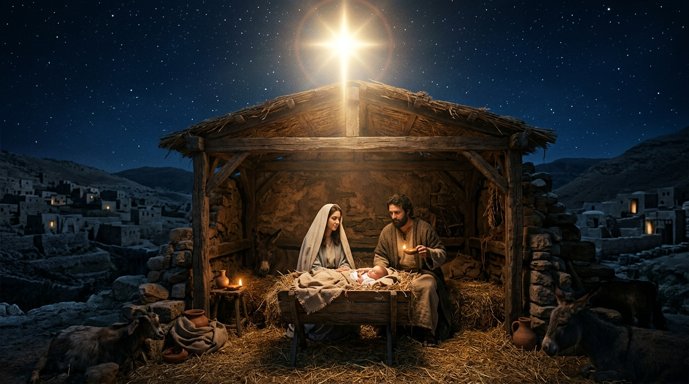

A Assinatura de Deus na História: A Exatidão Matemática das Profecias Messiânicas
A prova mais irrefutável da inspiração divina e da coesão inerrante das Escrituras Sagradas reside no fenômeno impressionante das profecias messiânicas. Escritas ao longo de um período de mais de mil anos por dezenas de autores diferentes em contextos históricos, políticos e culturais absolutamente distintos, as profecias do Antigo Testamento desenharam com minúcia cirúrgica e exatidão matemática o perfil, a linhagem, o local de nascimento, os traços do ministério, os detalhes da morte sacrificial e a ressurreição corpórea do Redentor que haveria de vir. Longe de serem generalidades vagas ou coincidências poéticas, esses textos constituem o eixo central da revelação redentora.
Desde a primeira promessa proferida no Éden de que a semente da mulher esmagaria a cabeça da serpente, passando pela especificação da linhagem de Judá, a descendência de Davi, o nascimento virginal em Belém, até o retrato pungente do Servo Sofredor em Isaías 53, a história humana move-se rigidamente sob o controle soberano do Criador. Este estudo aprofundado examina a anatomia exegética e o cumprimento histórico dessas profecias, atestando que Jesus de Nazaré é o único e legítimo Messias prometido às nações.
Índice do Estudo:
- 1. A Semente e a Linhagem: O Raiz de Jessé e o Trono Eterno
- 2. O Nascimento Virginal e a Geografia Profética de Belém
- 3. O Ministério de Cura, Rejeição e a Entrada Triunfal
- 4. A Paixão e Morte Expiatória: O Retrato de Isaías 53 e o Salmo 22
- 5. A Ressurreição e a Vindicação Profética ao Terceiro Dia
- 6. Tabela Analítica e Aplicação Existencial das Profecias Messiânicas
1. A Semente e a Linhagem: O Raiz de Jessé e o Trono Eterno
A revelação messiânica desdobra-se progressivamente como um funil histórico que estreita o foco geográfico e genealógico ao longo dos séculos. Logo após a queda no Éden, Deus profetizou que a salvação viria através da "semente da mulher" (Gênesis 3:15). Com o passar das gerações, esse escopo foi delimitado especificamente para a linhagem de Abraão, depois para a tribo de Judá — através da profecia patriarcal de Jacó que garantia que o cetro não se apartaria de Judá até que siló viesse (Gênesis 49:10) —, e posteriormente consolidado na casa real de Davi, através da Aliança Davídica que assegurava um trono eterno.
O profeta Isaías, escrevendo séculos antes do exílio, ampliou essa perspectiva ao declarar: "Porque um menino nos nasceu, um filho se nos deu; e o principado está sobre os seus ombros... Do aumento deste principado e da paz não haverá fim, sobre o trono de Davi e no seu reino" (Isaías 9:6-7). As genealogias apresentadas nos Evangelhos de Mateus e Lucas demonstram com precisão exata que Jesus de Nazaré preencheu irrepreensivelmente todos esses requisitos legais e biológicos.
2. O Nascimento Virginal e a Geografia Profética de Belém
A precisão das profecias messiânicas atinge níveis impressionantes quando analisamos os detalhes circunstanciais do advento de Cristo. O profeta Miqueias, no século VIII a.C., especificou com exatidão cirúrgica a aldeia exata onde o Messias deveria nascer: "E tu, Belém Efrata, posto que pequena entre os milhares de Judá, de ti me sairá o que será Senhor em Israel, e cujas saídas são desde os tempos antigos, desde os dias da eternidade" (Miqueias 5:2). Para que essa profecia se cumprisse literal e geograficamente, Deus moveu os bastidores do vasto Império Romano através de um decreto do imperador César Augusto ordenando o recenseamento universal, forçando José e Maria a viajarem de Nazaré justamente para Belém no momento do parto.
Paralelamente, séculos antes, o profeta Isaías previu a natureza sobrenatural desse nascimento: "Portanto o mesmo Senhor vos dará um sinal: Eis que a virgem conceberá, e dará à luz um filho, e chamará o seu nome Emanuel" (Isaías 7:14). A união da divindade eterna com a humanidade finita na encarnação cumpriu cabalmente a expectativa profética de que Deus viria habitar fisicamente entre o Seu povo.
3. O Ministério de Cura, Rejeição e a Entrada Triunfal
As profecias veterotestamentárias não anteciparam apenas o nascimento do Messias, mas desenharam detalhadamente a natureza e a recepção de Seu ministério público. Isaías previu que o ministério do Ungido seria marcado por uma profunda manifestação de compaixão e libertação espiritual: os olhos dos cegos seriam abertos, os ouvidos dos surdos desimpedidos e os coxos saltariam como um cervo (Isaías 35:5-6). Os evangelhos atestam que Jesus utilizou exatamente essas passagens proféticas para atestar aos discípulos de João Batista a autenticidade de Suas obras.
Contudo, os profetas também anunciaram que o Messias seria rejeitado pelos líderes religiosos de Sua própria nação. Conforme registrado no Salmo 118:22, "A pedra que os edificadores rejeitaram tornou-se a cabeça da esquina". A própria entrada triunfal de Jesus em Jerusalém montado em um jumentinho — o animal da paz e da humildade — foi a execução literal exata da profecia de Zacarias 9:9: "Alegra-te muito, ó filha de Sião; exulta, ó filha de Jerusalém; eis que o teu Rei virá a ti, justo e salvador, pobre, e montado sobre um jumento, e sobre um jumentinho, filho de jumenta".
4. A Paixão e Morte Expiatória: O Retrato de Isaías 53 e o Salmo 22
O cume absoluto da profecia messiânica encontra-se na descrição minuciosa da paixão, morte e expiação vicária de Cristo, escrita pelo profeta Isaías no capítulo 53 — redigido setecentos anos antes da invenção da crucificação como método de execução romana. O texto descreve com crueza impressionante que o Messias seria desprezado e rejeitado pelos homens, homem de dores e experimentado nos trabalhos; que Ele foi traspassado pelas nossas transgressões e moído pelas nossas iniquidades; e que "o Senhor pôde sobre ele a iniquidade de nós todos".
Da mesma forma, o Salmo 22 antecipa com precisão assustadora as próprias palavras proferidas por Jesus no madeiro — "Deus meu, Deus meu, por que me desamparaste?" —, além de descrever o escárnio dos espectadores, o translado das mãos e dos pés, e a divisão de Suas vestes mediante a sorte. Nenhum artifício humano ou coincidência histórica casual pode explicar a exatidão estatística e literal desses cumprimentos na cruz do Calvário.
5. A Ressurreição e a Vindicação Profética ao Terceiro Dia
A narrativa profética não encerra o Messias na escuridão fria do sepulcro. Os profetas anteciparam com clareza a vitória triunfante sobre a morte. No Salmo 16:10, profetizado por Davi, lê-se a garantia irrevogável: "Pois não deixarás a minha alma no inferno, nem permitirás que o teu Santo veja a corrupção". O apóstolo Pedro, no dia de Pentecostes, utilizou exatamente este argumento exegético para provar à multidão judaica que Davi falara profeticamente acerca da ressurreição corporal de Cristo, cujo corpo não permaneceu na tumba tempo suficiente para sofrer a decomposição física.
A ressurreição constituiu o selo divino de aprovação celestial sobre toda a obra messiânica, transformando o fracarente desespero dos discípulos na convicção inabalável de que o plano de redenção de Deus havia consumado a vitória definitiva sobre o pecado e sobre a morte.
6. Tabela Analítica e Aplicação Existencial das Profecias Messiânicas
| Passagem Profética (Antigo Testamento) | Conteúdo da Profecia | Cumprimento Histórico (Novo Testamento) |
|---|---|---|
| Miqueias 5:2 | Nascimento na pequena cidade de Belém. | Jesus nasce em Belém da Judeia durante o recenseamento romano (Mateus 2:1). |
| Zacarias 9:9 | Entrada triunfal montado sobre um jumentinho. | A entrada de Jesus em Jerusalém aclamado pela multidão (Mateus 21:1-9). |
| Salmo 41:9 / 55:12-14 | A traição executada por um amigo íntimo por trinta moedas de prata. | A traição calculista perpetrada por Judas Iscariotes (Mateus 26:14-16). |
| Isaías 53:5-7 | O sofrimento vicário, o silêncio perante os juízes e a morte substitutiva. | A crucificação de Cristo como Cordeiro imaculado pelos nossos pecados (João 19). |
💡 Aplicação Prática: O Que Aprendemos com as Profecias Messiânicas?
O estudo rigoroso das profecias messiânicas consolida de forma inabalável a nossa fé na absoluta soberania e fidedignidade da Palavra de Deus. Ver que centenas de anos antes de Cristo nascer, cada detalhe de Sua jornada terrena já estava milimetricamente desenhado no cronograma eterno do Criador demonstra que a nossa salvação não é obra do acaso, mas o resultado de um plano redentor arquitetado antes da fundação do mundo.
A aplicação prática desta verdade enche nossos corações de profunda paz e audácia espiritual. Se o Deus da profecia cumpriu com exatidão matemática cada sentença referente à primeira vinda de Cristo, podemos confiar sem reservas nas promessas proféticas que anunciam a Sua volta gloriosa para consumar todas as coisas. Que essa certeza oriente nossa vigilância e fortaleça nossa esperança diária.
Navegação rápida:
- Voltar ⬅️ Vitrine: Profecias Bíblicas
- Próximo Estudo ➡️ 2. O Destino de Israel
Apoie este projeto 🌱
Se este estudo foi útil, considere apoiar a manutenção do site.
Chave PIX (Celular):
marcosmontanaria@gmail.com